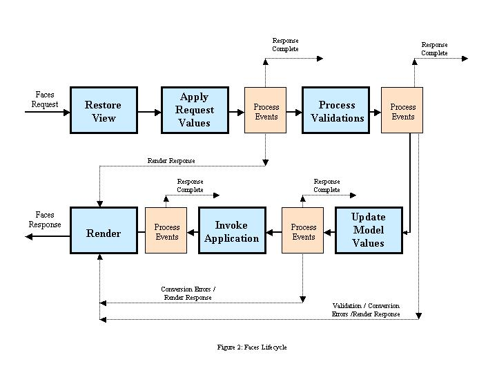
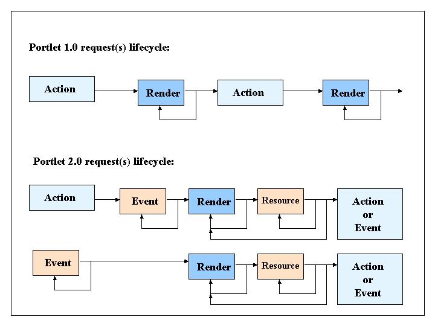

When an incoming portlet request is recognized as one that should be processed by Faces, the portlet executes it by calling the bridge’s doFacesRequest method. When executing the request, the bridge is responsible for setting up the appropriate Faces environment, executing the appropriate portions of the Faces lifecycle, and managing the resulting view and managed bean state in a manner that is consistent with the Faces specification. The bridge’s implementation provides this behavior without impacting Faces ability to (simultaneously) process requests coming in via the servlet container and by coexisting with any of the many Faces extensions that might also be configured in this application.
Bridge request processing maps between the portlet and Faces models within a well defined Faces execution flow. This entails managing differences between lifecyle processing.
Faces has a single request lifecycle primarily split between action (data processing) and rendering. The action portion of the lifecycle is broken into four distinct (sub) phases that move the submitted data from the request into the data models and performs the intended action (based on this new state). The render portion of the lifecycle is a single (sub) phase in which the view markup is generated based on the application’s recomputed state. The initial (sub) phase of the lifecyle is an initialization phase that restores the target view based on incoming request data.
Figure 2 depicts the non-portlet Faces lifecycle where both the action is processed and the view is rendered within a single client request.

Faces Lifecyle Diagram
Like the portlet 1.0 model, the portlet 2.0 model has a multi-request lifecycle primarily split between action (data processing) and rendering. The main difference is that the portlet 2.0 model provides a richer set of operations. In portlet 1.0 data processing was limited to those instigated by the client. Such actions were expressed in requests handled by the portlet’s processAction method. Likewise rendering occurred in a single request handled by the portlet’s render method. Within a given lifecycle, such renders might be repeated as the consumer (portal) reacquires the current markup. This usually occurs as a result of processing external to this portlet causing the consuming application to regenerate the markup for the entire page.
In portlet 2.0, data processing has been expanded to include events sent by the consumer application (usually as a result of another portlet raising an event). These are processed in the portlet’s processEvent method. Now a lifecycle can begin either with a processAction or a processEvent. And because events can be chained within a single lifecycle, a processEvent can be followed by zero or more processEvents prior to moving into the render portion of the lifecycle. Likewise the portlet 2.0 rendering model is enriched by including support for portlet’s rendering resources. The rendering portion of a lifecycle always begins with a call to the portlet’s render method. This can be followed by zero or more resource requests. And like portlet 1.0, because rendering is supposed to be idempotent, this portion of the lifecycle may repeat over and over until a new action or event causes the start of the next lifecycle. Figure 3 depicts the difference between the portlet 1.0 and 2.0 models:

Portlet Lifecycle Comparison
The key difference between the Faces model and the portlet model is that Faces typically executes completely within a single request while portlets execute each phase of its lifecycle in distinct requests. Faces relies on this single request execution using request scoped managed state created during the action phase to render from. This doesn’t work in the portlet environment as the phases are run in distinct requests and hence request scoped state is not carried across. A key function of the bridge is managing this Faces request scoped state across the varying portlet requests that constitute a lifecyle.
Figure 3 depicts the Faces lifecycle as executed in a portlet environment for a portlet that just responds to action and render requests. In response to a portlet action request, the Faces action lifecycle is executed but the resulting view is not rendered. Rather the bridge encodes in the action response the information it needs to subsequently render the view when called by the portlet to render. Following an action, one or more portlet render requests may be executed. Each of these render requests, if running in the same action scope, renders the same response. The bridge manages the necessary Faces state to ensure this behavior.
Faces Action Lifecycle in Bridge

Faces Render Lifecycle in Bridge
Like render, event processing runs using the bridge managed request scope. When an event is received, the scope in which it is related is restored. If no scope exists a new one is created. The Faces “action” lifecycle is run to restore the view but since a portlet event doesn’t include POSTBACK data the other phases are skipped. The event is processed by a portlet provided event handler whose result (can) contain a Faces navigation. If returned, the navigation is processed and encoded. The current request state is preserved within the (existing) scope in case it has been modified and the event response returned. For situations when an event signals an application transition where it becomes necessary to clear all or some of the existing scope, the portlet must to this manually by removing the appropriate request scope attributes within its event handler. The details on managing this execution are described below in section 5.2.5.
Resource requests are an additional phase in the overall portlet render lifecyle. Following a render, one or more resource requests are made to either acquire dependent resources to complete the rendition or update parts of the existing rendition. As such, resource requests run within the same restored bridge managed request scope as its render request. What is unique to resources, however, is they can be a POSTBACK. I.e. they can be a Faces view (form) submit requesting a partial update and rendition and hence require the full Faces action lifecycle to be run. So like the event processing described above, resource request handling also has to deal with saving changes to the restored scope so that subsequent render requests will have complete and updated state. The details on managing this are describe below in section 5.2.7.
To support Faces, the bridge is responsible for encoding portlet (action) responses in a manner that allows it (and Faces) to reestablish the request environment that existed at the end of the corresponding action phase during subsequent render requests that are identified as pertaining to that action (or event). The term used to describe the scope of this managed data is the bridge request scope. The bridge request scope manages two types of Faces data: the Faces view state and the additional Faces request scope data Faces relies on when executing both the action and the render in a single request. Though the Faces view state management is commonly delegated to the normal Faces StateManager process, the bridge is responsible for ensuring that such state is not restored if it can’t restore the associated data. This additional associated data is called scoped data and includes[5.1]:
FacesMessage(s) for each component in the view containing such messages.The Faces request scope attributes returned by calling ExternalContext.getRequestMap() except for:
FacesContext for this requestjavax.portlet.PortletConfig, javax.portlet.PortletContext, javax.portlet.PortletRequest, javax.portlet.PortletResponse, javax.portlet.PortletSession, javax.portlet.PortletPreferences, javax.portlet.PortalContext, javax.faces.context.FacesContext, javax.faces.context.ExternalContext, javax.servlet.ServletConfig, javax.servlet.ServletContext, javax.servlet.ServletRequest, javax.servlet.ServletResponse, or javax.servlet.HttpSession.javax.portlet”, “javax.portlet.faces”, “javax.faces”, “javax.servlet”, or “javax.servlet.include” namespaces.ResponseStateManger.VIEW_STATE_PARAM (if it exists).javax.portlet.faces.[portlet
name].PRESERVE_ACTION_PARAMS PortletContext attribute exists and has a value of TRUE.Specifically, the bridge must implement a notion of a bridge request scope that supplies the expected Faces semantics. This is done as follows:
VIEW_STATE_PARAM management). In the portlet (and Faces) model, render is supposed to be idempotent.Notes:
ViewHandler.createView() is used to establish the viewroot vs. ViewHandler.restoreView(). This behavior should occur automatically as a by-product of not being able to restore the request scope. The default Faces implementation relies on the value of the ResponseStateManager.VIEW_STATE_PARAM request parameter and ResponseStateManager.isPostback() to determine whether a targeted view has corresponding state to be restored. ResponseStateManager.isPostback() also depends on the ResponseStateManager.VIEW_STATE_PARAM request parameter. As the bridge manages the ResponseStateManager.VIEW_STATE_PARAM request parameter in its request scope, not restoring it should ensure the view is recreated.Note: A straightforward implementation for managing the bridge request scope is identify the scope via a key stored as a portlet render parameter. However, because the portlet model doesn’t allow the bridge to set new portlet render parameters in a resource request, it must use a different technique to manage the such a newly created scope until such time as the technique becomes available (next action or event).
Though there is a long list of excluded attributes and objects cited in section 5.1.2, the extended bridge request scope is inclusive. It includes application request scoped attributes except those specific few it knows are controlled by the standard runtime containers. However, there are times when application request attributes really are utilized on a per request basis and hence shouldn’t be managed by the extended bridge request scope. An example is a flag indicating which type of request this is. e.g. a flag used during a partial page request. If this flag were to be preserved, all subsequent requests within this scope would be marked as partial requests even if they are not. In addition to the attributes cited above, the bridge will exclude from its request scope those attributes:
javax.portlet.faces.annotation.ExcludeFromManagedRequestScope[5.10a]<bridge:excluded-attributes> element structure defined in the schema portlet2.0-bridge-faces1.2-faces-config-extensions.xsd when such element structure appears as a child of the <application-extension> element in any faces-config.xml reachable by this web application[5.10b].For example:
<?xml version="1.0" encoding="windows-1252"?>
<faces-config version="1.2" xmlns="http://java.sun.com/xml/ns/javaee"
xmlns:bridge="http://www.apache.org/myfaces/xml/ns/bridge/bridge-extension">
<application>
<application-extension>
<bridge:excluded-attributes>
<bridge:excluded-attribute>myFacesExtension.requestFlag</bridge:excluded-attribute>
<bridge:excluded-attribute>myFacesExtension.state.*</bridge:excluded-attribute>
</bridge:excluded-attributes>
</application-extension>
</application>
</faces-config>
<bridge:excluded-attributes> element structure defined in the schema portlet2.0-bridge-faces1.2-faces-config-extensions.xsd when such element structure appears as a child of the <application-extension> element in any faces-config.xml reachable by this web application[5.10c].javax.portlet.faces.[portlet
name].excludedRequestAttributes and that portlet is the target of the current request[5.10d].javax.portlet.faces.[portlet name].excludedRequestAttributes and that portlet is the target of the current request[5.10e].The value of the VIEW_STATE_PARAMrequest parameter identifies the view state to be restored by the targeted view. From a Faces specification perspective this value is opaque, i.e. implementation dependent. Because the bridge manages this parameter in its request scope, to properly support rerender within the same action (lifecycle), it must take care to keep the value of this managed parameter in sync with both the current (render) view and the current (saved) state. One strategy for handling this is for the bridge to implement and configure its own StateManager implementation. In this implementation the bridge overrides the writeState method. It buffers the output of the delegated writeState and parses the result to extract the corresponding new value of the VIEW_STATE_PARAM written into the markup. It then updates the value of the VIEW_STATE_PARAM parameter maintained within the current bridge request scope, ensuring that a subsequent rerender of this view in this scope will restore with the correct view state.
The JSF 1.2 specification, section 6.1.5 requires that the various FacesContext methods that get Messages return those Messages in insertion order. The bridge must preserve this requirement while managing such Messages within the bridge request scope[5.11].
The bridge is called by the portlet to execute Faces requests. A Faces request is one that targets a Faces view and expects to have the Faces lifecycle executed within the Faces environment. The bridge acts as a Faces controller in a portlet environment; it determines the Faces view target, acquires the appropriate Faces lifecycle and context objects, restores managed lifecycle state, and executes the Faces lifecycle. This is done as follows:
To execute a Faces request within the portlet environment, the bridge uses the Faces Lifecycle object. The bridge must get the Lifecycle object by calling a LifecycleFactory. The bridge must acquire the LifecycleFactory by calling the Faces FactoryFinder passing the identifier FactoryFinder.LIFECYCLE_FACTORY. For example:
LifecycleFactory lifecycleFactory =
(LifecycleFactory) FactoryFinder.getFactory(FactoryFinder.LIFECYCLE_FACTORY);
Distinct Lifecycle implementations are identified by an identifier. The identifier used by the bridge to acquire a Lifecycle object from the LifecycleFactory is determined by:
A PortletContext initParameter whose name is represented by the constant FacesServlet.LIFECYCLE_ID_ATTR. For example:
String lifecycleId =
mPortletConfig.getPortletContext().getInitParameter(FacesServlet.LIFECYCLE_ID_ATTR);
If this initParameter doesn’t exist or has an empty value then the default Lifecycle identifier is used: LifecycleFactory.DEFAULT_LIFECYCLE.
For each doFacesRequest invocation processing a Faces target, the bridge must acquire a FacesContext object. The bridge must acquire the FacesContext by calling the FacesContextFactory[5.12]. The FacesContextFactory must be acquired by calling the FactoryFinder passing the identifier FactoryFinder.FACES_CONTEXT_FACTORY. For example:
FacesContextFactory contextFactory =
(FacesContextFactory) FactoryFinder.getFactory(FactoryFinder.FACES_CONTEXT_FACTORY);
The FacesContext is acquired from the factory by passing the corresponding PortletContext, PortletRequest, PortletResponse objects and the Lifecycle acquired in section 5.2.1[5.13]. For example:
FacesContext context =
contextFactory.getFacesContext(portletContext, portletRequest, portletResponse, mLifecycle);
Prior to acquiring the FacesContextFactory the bridge is required to set the following request attribute on the passed request object[5.14]:
javax.portlet.faces.phase: The value of this attribute is an enumeration (javax.portlet.faces.Bridge.PortletPhase) that identifies which portlet request phase the bridge is operating within. Its purpose is to allow Faces implementations to determine its portlet execution context without using instanceof. It is not indicative of the Faces lifecycle phases. Possible phase values for a portlet based on the Java Portlet Specification 2.0 (JSR 286) include: ACTION_PHASE, EVENT_PHASE, RENDER_PHASE, and RESOURCE_PHASE. The value ACTION_PHASE must be set when doFacesRequest() is passed an ActionRequest and ActionResponse. The value EVENT_PHASE must be set when doFacesRequest() is passed an EventRequest and EventResponse. The value RENDER_PHASE must be set when doFacesRequest() is passed a RenderRequest and RenderResponse. The value RESOURCE_PHASE must be set when doFacesRequest() is passed an ResourceRequest and ResourceResponse.
To execute a Faces request, the bridge is responsible for determining the appropriate Faces viewId to target for this request and presenting this information to the Faces environment such that it can determine and utilize this viewId. There are three mechanisms the bridge uses for determining the target view:
Specifically the bridge must process for the target view in the following order until a viewId is determined:
javax.portlet.faces.viewId is non null then use this value as the target viewId[5.15].javax.portlet.faces.viewPath is non null then use this value to process the ContextPath relative path and extract the target viewId[5.16]. If unable to extract a viewId from the path throw javax.portlet.faces.BridgeInvalidViewPathException[5.17].viewId from the prior redirect[5.18].Note: depending on the methodology the bridge relies on to encode the target viewId in responses the bridge may need an alternative mechanism to handle this redirect during render requirement. For example, if the bridge encodes the target viewId in a portlet render parameter then it needs to implement a temporary in-memory cache for this redirect url management as the portlet model doesn’t allow changes to render parameters during a render response.
viewId from request information encoded by the bridge in a prior response. Use this viewId, if and only if, the current portlet mode is the same as the portlet mode in which the viewId was encoded into the response[5.19]. Details of such encoding/decoding are implementation specific.PortletContext attribute javax.portlet.faces.[portletName].defaultViewIdMap. The Map is keyed by portlet mode name. If the bridge can’t locate a default viewId for the current portlet mode or that default is null, throw javax.portlet.faces.BridgeDefaultViewNotSpecifiedException[5.20].Note: In some circumstances a bridge may be able to determine that request doesn’t represent a request for a Faces target and was therefore inappropriately passed to it. In this circumstance the bridge may throw the javax.portlet.faces.BridgeNotAFacesRequestException instead of resolving to the default viewId.
In a variety of the situations above, view information may optionally contain a query string. When a query string is encountered the bridge must extract this information as part of its process of determining the viewId and expose the parameters in this query string as additional request parameters[5.21].
To pass the viewId to the Faces environment, the bridge must present the information as if it were encoded directly in the incoming request URI path. I.e. Faces encodes the target viewId in the path portion of the action URLs it is instructed to manufacture. The bridge inserts itself in this process to transform such URLs into properly encoded portlet action URLs. As part of this transformation the bridge encodes the original target information so that it can reacquire it when the request is submitted. Upon receiving such a request, the bridge reverses the process by determining the intended target and then presenting this information via the path information that existed in this original URL. This is done by reverse engineering the URI paths from the viewId and providing this path information to Faces via the appropriate ExternalContext methods. Such reverse engineering must take into account whether the Faces servlet is prefix or suffix mapped and work correctly in both situations. [Note: the current version of the Faces RI needs a workaround where one additionally sets this path information in the corresponding “javax.servlet.include.” attributes when reverse engineering indicates Faces is extension mapped].
It is recommended that this process of reverse engineering the paths from the bridge’s stored viewId be done within its ExternalContext implementation and not done when/where it executes the Faces lifecycle.
The bridge processes a portlet action request when its doFacesRequest is called with the corresponding portlet Action request and response objects:
public void doFacesRequest(
javax.portlet.ActionRequest request, javax.portlet.ActionResponse response);
The bridge should only be called to process an action request for a Faces target.
In processing this request the bridge must:
init() has been called following either the bridge’s construction or a prior release())[5.22].javax.portlet.faces.phase request attribute to Bridge.PortletPhase.ACTION_PHASE prior to acquiring the FacesContext[5.23].FacesContext and Lifecycle as described above ensuring the appropriate target viewId will be processed 5.2.3.execute the action phase of the Faces lifecycle. This is accomplished by calling the execute method on the Lifecycle object acquired in section 5.2.1. For example:
lifecycle.execute(context);
Provide a PhaseListener that recognizes the RESTORE_VIEW afterPhase. Within this notification process any public render parameters as per section 5.3.2.
javax.portlet.faces.phase request attribute[5.26].The bridge processes a portlet event request when its doFacesRequest is called with the corresponding portlet Event request and response objects:
public void doFacesRequest(javax.portlet.EventRequest request, javax.portlet.EventResponse response);
The bridge should only be called to process an event if the portlet has initialized the bridge with a BridgeEventHandler and the request is for a Faces target. In processing this request the bridge must:
init() has been called following either the bridge’s construction or a prior release())[5.53].javax.portlet.faces.phase request attribute to Bridge.PortletPhase.EVENT_PHASE prior to acquiring the FacesContext[5.54].viewId and request scope state referenced in the render request[5.48].FacesContext and Lifecycle as described above ensuring the appropriate target viewId will be processed 5.2.3. Note: if the event request follows an action request, the Bridge will have to manually restore the view from its cache as it doesn’t get saved by Faces until the subsequent render request.execute the action phase of the Faces lifecycle up through but not beyond the RestoreView model phase. This is accomplished by installing a PhaseListener which terminates processing after the RestoreView phase and calling the execute method on the Lifecycle object acquired in section 5.2.1. For example:
lifecycle.execute(context);
Provide a PhaseListener that recognizes the RESTORE_VIEW afterPhase. Within this notification process any public render parameters as per section 5.3.2.
FacesContext and the Event retaining the returned EventNavigationResult[5.56].NavigationResult returned from the event handler is non-null, acquire the applications NavigationHandler and call handleNavigation() passing the fromAction and outcome from the NavigationResult[5.57].handleNavigation()).If the bridge is called to process an event and it hasn’t been initialized with a BridgeEventHandler then the bridge only sets the current non-public request render parameters on the response so they are preserved for the next request and then returns[5.61].
The bridge processes a portlet render request when its doFacesRequest is called with the corresponding portlet Render request and response objects:
public void doFacesRequest(
javax.portlet.RenderRequest request, javax.portlet.RenderResponse response);
The bridge may be called to process a portlet render request for either a Faces target or a nonFaces target.
In processing this request for a Faces target the bridge must:
init() has been called following either the bridge’s construction or a prior release())[5.27].javax.portlet.faces.phase request attribute to Bridge.PortletPhase.RENDER_PHASE prior to acquiring the FacesContext[5.28].FacesContext and Lifecycle as described above ensuring the appropriate target viewId will be processed 5.2.3.viewId and request scope state referenced in the render request[5.30].RenderKits ResponseStateManager isPostback() method returns true if and only if a bridge request scope has been identified and restored[5.31]. Note: as indicated in section 5.1.2 this is controlled by both restoring the value of the ResponseStateManager.VIEW_STATE_PARAM parameter from the bridge request scope and setting the javax.portlet.faces.isPostback attribute with a Boolean whose value is true.ensure the corresponding Faces view is (re)established for the targeted Faces viewId. This is accomplished by calling the execute method on the Lifecycle object acquired in section 5.2.1. For example:
lifecycle.execute(context);
In meeting this requirement the bridge must:
- manually restore the view from its cache if the view hasn't yet been saved
by Faces<sup>[[5.32](TCK-Tests.html#5.32)]</sup>.
- ensure that only the Faces `RestoreView` (if necessary) phases executes.
I.e. the bridge must ensure that the Faces action phases following the
`RestoreView` phase are skipped<sup>[[5.33a](TCK-Tests.html#5.33)]</sup>.
- ensure that all PhaseListeners listening on the before and after phase of
the `PhaseId.RESTORE_VIEW` are
called<sup>[[5.33b](TCK-Tests.html#5.33)]</sup>.
- provide a `PhaseListener` that recognizes the `RESTORE_VIEW afterPhase`.
Within this notification process any public render parameters as per section
[5.3.2](Chapter-5-Bridge-Lifecycle-Requirements.html#5.3.2)
execute the render phase of the Faces lifecycle[5.34]. This is accomplished by calling the render method on the Lifecycle object acquired in section 5.2.1. For example:
lifecycle.render(context);
recognize if a redirect occurs during this render process and handle by discarding any existing output, and rerunning this process based on the new target and its request parameters (if the target has a query string)[5.35].
VIEW_STATE_PARAM parameter managed in this bridge request scope[5.36].FacesContext[5.37].javax.portlet.faces.phase request attribute[5.38].The bridge processes a portlet resource request when its doFacesRequest is called with the corresponding portlet Resource request and response objects:
public void doFacesRequest(
javax.portlet.ResourceRequest request, javax.portlet.ResourceResponse response);
The bridge may be called to process a resource request for a Faces target or a non-Faces target.
In processing this request the bridge must:
init() has been called following either the bridge’s construction or a prior release())[5.62].javax.portlet.faces.phase request attribute to Bridge.PortletPhase.RESOURCE_PHASE prior to acquiring the FacesContext[5.63].RequestDispatcher and use forward() to render the resource[5.64].If the request targets a Faces resource:
FacesContext and Lifecycle as described above ensuring the appropriate target viewId will be processed 5.2.3.view is (re)established for the targeted Faces viewId. This is accomplished by calling the execute method on the Lifecycle object acquired in section 5.2.1. For example: lifecycle.execute(context);
Provide a PhaseListener that recognizes the RESTORE_VIEW afterPhase. Within this notification process any public render parameters as per section 5.3.2.
render phase of the Faces lifecycle. This is accomplished by calling the render method on the Lifecycle object acquired in section 5.2.1. For example: lifecycle.render(context);
javax.portlet.faces.phase request attribute[5.68].If the bridge has acquired the FacesContext within a doFacesRequest call, it must release it before it returns regardless of the disposition of the result. E.g.
context.release();
The bridge automates the processing of public render parameters. A public render parameter can be mapped to an object’s accessor (get/set method) designed to handle a String representation of the value via a Faces ValueExpression. When a new public render parameter value is received in a request, the bridge sets the value by calling the ValueExpression’s setValue(). At the end of an action or event request, if the current value of any mapped public render parameter doesn’t match the current incoming value, the bridge sets the new value in an outgoing public render parameter (if feasible in the given phase). The bridge doesn’t directly support updating or removing a public render parameter from its mapped model during either a render or resource request.
A public render parameter can be mapped to an object’s accessor (get/set method) designed to handle a String representation of the value. This mapping is described in the bridge’s application-extension section of the face-config.xml. The syntax for this is described in portlet2.0-bridge-faces1.2-faces-config-extensions.xsd. The mapping names both the public render parameter being mapped and the Faces EL representation of the object that maintains and/or processes this value. For example the following maps a public render parameter called name to the lastName data member of the UserBean object:
<application>
<application-extension>
<bridge:public-parameter-mappings>
<bridge:public-parameter-mapping>
<parameter>name</parameter>
<model-el>UserBean.lastName</model-el>
</bridge:public-parameter-mapping>
</bridge:public-parameter-mappings>
</application-extension>
</application>
In the above example, because the parameter name is not qualified, any portlet in the web application that supports this public render parameter will have its model updated by the bridge through execution of the EL. To limit processing, a qualified form of the parameter name can be specified that identifies the specific portlet (by name) that the mapping applies to. This can be useful for distinguishing between two portlets that use the same public render parameter but different mappings. The syntax of a qualified parameter name is portletName:paramName. For example:
<application>
<application-extension>
<bridge:public-parameter-mappings>
<bridge:public-parameter-mapping>
<parameter>MyPortlet:name</parameter>
<model-el>${UserBean.lastName}</model-el>
</bridge:public-parameter-mapping>
<bridge:public-parameter-mapping>
<parameter>AnotherPortlet:name</parameter>
<model-el>${AnotherUser.name}</model-el>
</bridge:public-parameter-mapping>
</bridge:public-parameter-mappings>
</application-extension>
</application>
This example describes the mapping of the public render parameter name to two different beans in two different portlets. In the first declaration, when processing the public render parameters in a request for the portlet MyPortlet, the bridge evaluates EL to set the lastName value in UserBean. In the second declaration, when processing the public render parameters in a request for the portlet MyPortlet, the bridge evaluates EL to set the name value in AnotherUser.
When a parameter name is not qualified, the bridge maps the public render parameter regardless of which portlet is the target of the current request. Because new portlets may be added to the application over time, it is recommended to always qualify each parameter even when not current needed to avoid future conflicts.
It is also recommended that to achieve the best mapping to the portlet public render parameter semantics one only map to a request scope object that is explicitly excluded from the bridge request scope. Portlet public render parameters are consumer managed state whose current values are passed on each request. By only mapping to bridge request scope excluded (request) scope objects one ensures the portlet doesn’t maintain this state between requests.
When a bridge processes a Faces request it processes incoming public render parameters after the RESTORE_VIEW phase of the Faces lifecycle has executed and before any other phase runs[5.69]. This allows the bridge to move the values of the public render parameters directly into their mapped models before Faces updates the values in the view component’s based on these models. The process works as follows: For each public render parameter in the incoming request that is named in a mapping in the public-parameter-mappings section of the faces-config.xml
application-extension section See 5.3.1, the bridge calls the set accessor of the associated bean’s mapped data member[5.70]. The accessor must accept a String input (the bridge does no type conversion). After processing all mapped public render parameters, if and only if the portlet has registered a public render parameter handler, call its processUpdates() passing the FacesContext[5.71]. This gives the portlet an opportunity to trigger needed model updates or recomputations.
Before returning from processing a Faces action[5.72] or event[5.73] request, the bridge reprocesses the public parameter mappings to determine if any model values that are mapped to a public parameter have changed. If a value has changed, the public parameter is set in the response. This occurs after completing the Faces processing. The updated public parameters are encoded directly into the response.
Processing model changes and reflecting them in the portlet response involves processing each mapped model 5.3.1. For each mapped model in the public-parameter-mappings section of the faces-config.xml
application-extension section that pertains to this portlet, the bridge calls the get accessor of the associated bean’s mapped data member. If this value is different than the value that existed prior to running the Faces lifecycle then the bridge considers the value changed and should be updated in the portlet response. This is done by calling setParameter on the named public render parameter.
The portlet model supports a concept of render modes called PortletMode. A PortletMode represents a distinct render path within an application. There are three standard modes: view, edit, and help. Each is usually represented by a distinct set of views or pages. A consumer can render a portlet in any mode at any time. I.e. portlet’s aren’t allowed to assume that once they are in a mode they will remain in the mode until the portlet switches.
Mode changes impacts the bridge lifecyle management in a number of ways:
viewId used instead[5.39].VIEW_STATE_PARAM request parameter is not exposed during a render in which the mode has changed. Typically this occurs automatically as a result of not restoring the bridge request scope[5.41].5.4.2 Encoding PortletMode changes in Faces navigation PortletMode changes are indicated using portlet specific APIs in constructing an action response or action (render) URL. There is no Face’s ExternalContext container independent method for changing a mode. Though modes are inherently portlet specific, the bridge provides mechanisms for encoding mode changes without having to get and operate on portlet specific objects. The bridge’s ExternalContext.encodeActionURL recognizes the query string parameter javax.portlet.faces.PortletMode and uses this parameter’s value to set the portlet mode on the underlying portlet actionURL or response. Once processed it then removes this parameter from the query string. This means the following navigation rule causes one to render the edit.jspx viewId in the portlet edit mode[5.42]:
5.4.3 Navigating to a mode’s last viewId By default a mode change will start in the mode’s default view without any (prior) existing state. One common portlet pattern when returning to the mode one left after entering another mode (e.g.. view -> edit -> view) is to return to the last view (and state) of this origin mode. For example, if a portlet’s view mode contains three views and you enter edit mode from the second view, a common portlet pattern when navigating back from edit to view mode is to return to the second view in the state that existed prior to it entering edit mode. Though a common pattern, the portlet container doesn’t provide direct support for this behavior. Instead a portlet must explicitly encode the necessary information so that when returning to a prior mode it can target the appropriate view and restore the appropriate state. As the bridge manages such view and state encoding it is responsible for providing the following mechanism so portlet’s can support this pattern:
the bridge must maintain a set of session attributes named javax.portlet.faces.viewIdHistory.[mode] where there is one such attribute per supported portlet mode[5.43]. The value of this attribute is the last viewId that was active for a given mode[5.44]. If a mode has never been active then this attribute's value must be the same as the that mode's default viewId[5.45]. Furthermore, if not encoding the default viewId, this viewId value must be encoded with all the current render parameters except those added by the bridge to maintain the view target. Finally, this viewId value must be encoded with the corresponding portlet mode it represents. These extra parameters must be encoded in the viewId in a manner that conforms to JSF expectations for valid viewIds and which will be processed correctly when passed through the calls ViewHandler.getActionURL and the bridge's ExternalContext.encodeActionURL such that it results in a valid portlet actionURL and/or actionResponse which not only targets the associated viewId in the associated PortletMode but also returns to that view with the same state (both in the bridge's request scope, view state, and any other render parameters) as existed when this view was added to the history list[5.46].
Example viewId: /myView2.jspx?javax.portlet.faces.PortletMode=view&_bridgeScopeId=3g6dxxxxxx
Note: In Portlet 1.0 there is no direct API for distinguishing between a request's render parameters and regular (post) parameters. To meet the above requirements concerning encoding render parameters, it is recommended that the history list only be updated during the render phase. As Portlet 1.0 doesn't carry forward postback parameters into the render phase one can infer the render parameters during the render phase as they should be the only parameters received.
the bridge must allow, recognize, and evaluate faces-config.xml navigation rules where the <to-view-id> element is a JSF expression[5.47].
The above maintained session attributes are intended to be used by developers to navigate back from a mode to the last location and state of a prior mode. As such a developer needs to describe a dynamic navigation: "from view X return to the last view of mode y". This is most easily expressed via an EL expression. E.g.
<navigation-rule>
<from-view-id>/edit.jspx*</from-view-id>
<navigation-case>
<from-outcome>view</from-outcome>
<to-view-id>#{sessionScope['javax.portlet.faces.viewIdHistory.view']}</to-view-id>
</navigation-case>
</navigation-rule>
Note to portlet developers: depending on the bridge implementation, when using values from these session scoped attributes or any viewIds which may contain query string parameters it may be necessary to use the wildcard syntax when identifying the rule target. For example, the above <to-view-id> expression returns a viewId of the form /viewId?javax.portlet.faces.PortletMode=view&.... Without wildcarding, when a subsequent navigation occurs from this new view, the navigation rules wouldn't resolve because there wouldn't be an exact match. Likewise, the above edit.jspx <from-view-id> is wildcarded because there are navigation rules that target it that use a query string (<to-view-id> /edit.jspx?javax.portlet.faces.PortletMode=edit </to-view-id>). Developers are encouraged to use such wildcarding to ensure they execute properly in the broadest set of bridge implementations.